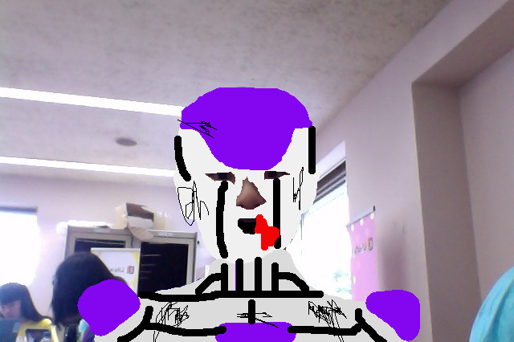
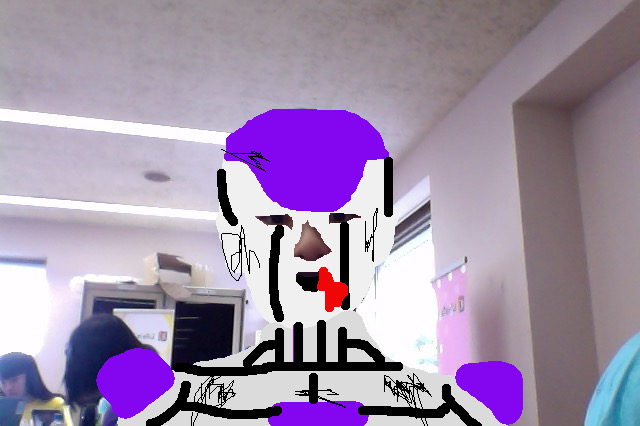
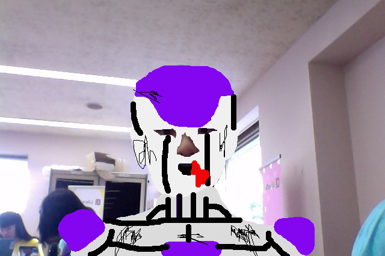

アルファ２話 ブリーザとの戦い
ブリーザに喧嘩を売りに行った桃太郎。ブリーザは、桃太郎の表面上の戦闘力しか考えていなかったので、なめてかかった。しかし、桃太郎は、伝説のスーパーヤサイ人になることができたのだ。桃太郎は、ブリーザを瞬殺し、粉々にした。
その頃、かぐや太郎は、パンチーという女の科学者に出会い、ニャメック星に一緒に出発する。

ブリーザに喧嘩を売りに行った桃太郎。ブリーザは、桃太郎の表面上の戦闘力しか考えていなかったので、なめてかかった。しかし、桃太郎は、伝説のスーパーヤサイ人になることができたのだ。桃太郎は、ブリーザを瞬殺し、粉々にした。
その頃、かぐや太郎は、パンチーという女の科学者に出会い、ニャメック星に一緒に出発する。